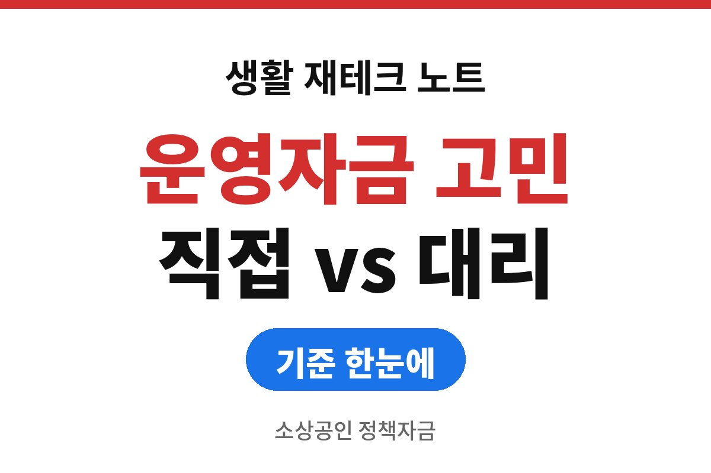
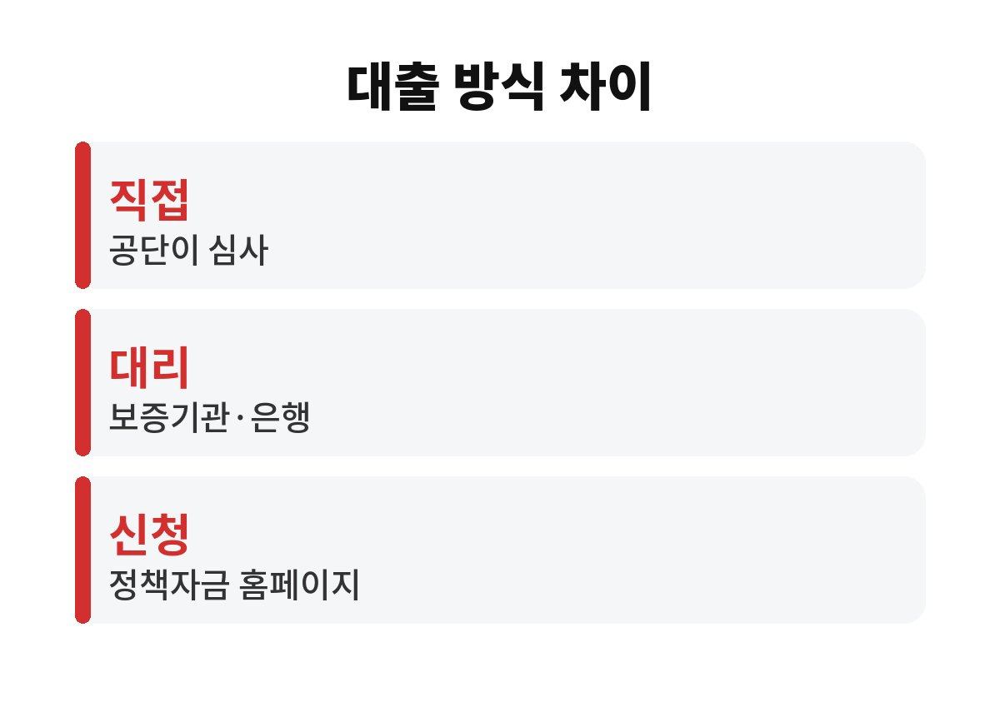
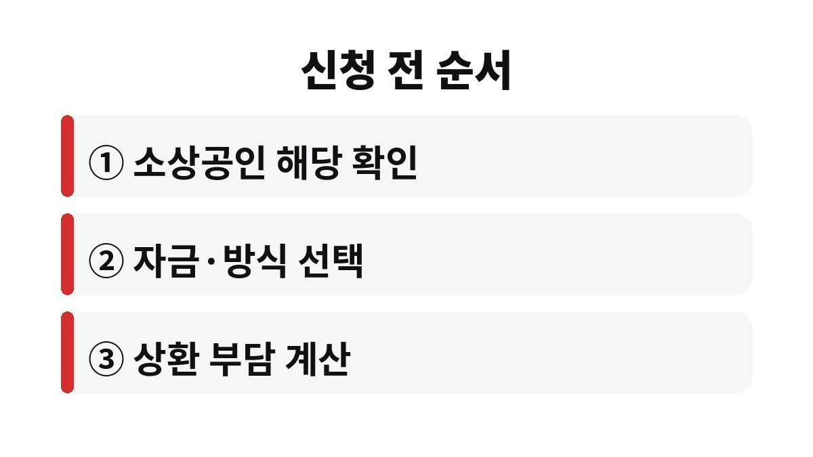

소상공인 정책자금은 소상공인시장진흥공단이 직접 빌려주는 직접대출과 보증기관·은행이 실행하는 대리대출로 나뉘며, 신청은 소상공인정책자금 홈페이지에서 시작합니다.
2026년 초 공개된 안내 기준으로 두 방식의 차이와 자금별 한도, 금리 구조를 비교했습니다.
빌리라는 권유가 아니라 신청 전에 무엇을 따져야 하는지 보여 주는 글입니다.
| 구분 | 직접대출 | 대리대출 |
|---|---|---|
| 심사 주체 | 소상공인시장진흥공단 | 보증서가 필요하면 보증기관 심사 후 은행 실행, 필요 없으면 은행 심사 |
| 신청 창구 | 정책자금 홈페이지, 지역센터 현장 접수 | 정책자금 홈페이지에서 신청해 확인서를 받은 뒤 보증기관 또는 은행 |
| 대표 자금 | 신용취약소상공인자금, 재도전특별자금 | 일반경영안정자금, 경영안정자금(재해·경영애로 유형), 청년고용연계자금, 대환대출 |

같은 정책자금이라도 어느 쪽 창구로 들어가는지에 따라 심사받는 곳이 달라집니다.
대리대출은 확인서를 받고 나서도 보증서 발급이나 은행 심사가 한 번 더 있어서 실행까지 걸리는 시간이 직접대출보다 길어질 수 있습니다.
직접대출은 디지털 신청이 어려운 사업자를 위해 전국 지역센터에서 현장 접수도 받는다고 안내됩니다.
대리대출은 은행 창구에서 바로 신청하는 것이 아니라 먼저 정책자금 홈페이지 신청과 확인서 발급을 거친다는 점이 헷갈리는 부분입니다.
확인서 없이 은행부터 찾아가면 처음 단계로 되돌아가게 됩니다.
일반경영안정자금은 2026년 안내 기준으로 정책자금 기준금리에 0.6%p를 더한 변동금리입니다.
기간은 5년 이내이고 거치 기간 2년이 포함되며, 연간 한도는 7천만 원입니다.
업력과 상관없이 신청할 수 있다고 안내되어 있습니다.
경영안정자금(재해·경영애로 유형)은 재해를 입은 소상공인이면 연 2.0% 고정금리에 최대 1억 원까지 안내됩니다.
일시적 경영애로 소상공인은 기준금리 변동 조건에 최대 7천만 원입니다.
재해 확인 서류가 필요할 수 있으니 신청 전에 공단에 확인합니다.
신용취약소상공인자금은 소상공인 지식배움터의 신용관리 교육을 이수한 중·저신용자가 대상이며 NCB 839점 이하 조건이 안내되어 있습니다.
금리는 기준금리에 1.6%p를 더하고 최대 3천만 원입니다.
직접대출이라 공단에 신청합니다.
같은 상황에 해당하는 자금이 여럿이면 금리 구조와 한도를 나란히 놓고 보고, 직접대출 쪽 자금이 내 신용 조건에 맞는지도 따로 봅니다.
대환대출은 중·저신용 소상공인이 기존 대출을 갈아타는 자금으로 연 4.5% 고정금리, 최대 5천만 원이 안내되어 있으며 NCB 919점 이하 조건이 붙습니다.

정책자금은 보조금이 아니라 갚아야 하는 대출입니다.
금리가 낮아 보여도 거치 2년이 끝나면 원금 상환이 시작되어 매출이 줄어든 달에 부담이 커질 수 있습니다.
제로페이 가맹점이나 노란우산공제 가입자 같은 우대금리 대상은 해당하는지 확인해 볼 만하지만, 우대를 받으려고 새 상품에 가입하는 것은 별개의 판단입니다.
신청 직전에 급하게 서두르면 자금 이름을 잘못 고르는 일이 잦습니다.
자금마다 대출 기간과 거치 기간이 달라서 같은 금액이라도 월 부담이 다르게 나옵니다.
여기 적은 한도와 금리는 2026년 초 공개된 안내 수치라 공고 시점에 따라 달라질 수 있습니다.
신청 전에 소상공인정책자금 홈페이지에서 내가 필요한 자금의 최신 한도와 금리를 먼저 확인합니다.
자격이나 서류가 헷갈리면 가까운 소상공인시장진흥공단 지역센터에 문의하는 것이 빠릅니다.
※ 본 글은 2026년 기준 공개 자료를 바탕으로 정리한 정보이며, 세금·금융 상품 선택은 본인 상황에 맞게 전문가와 확인하시길 바랍니다.